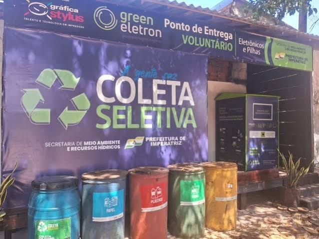
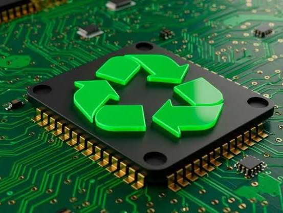
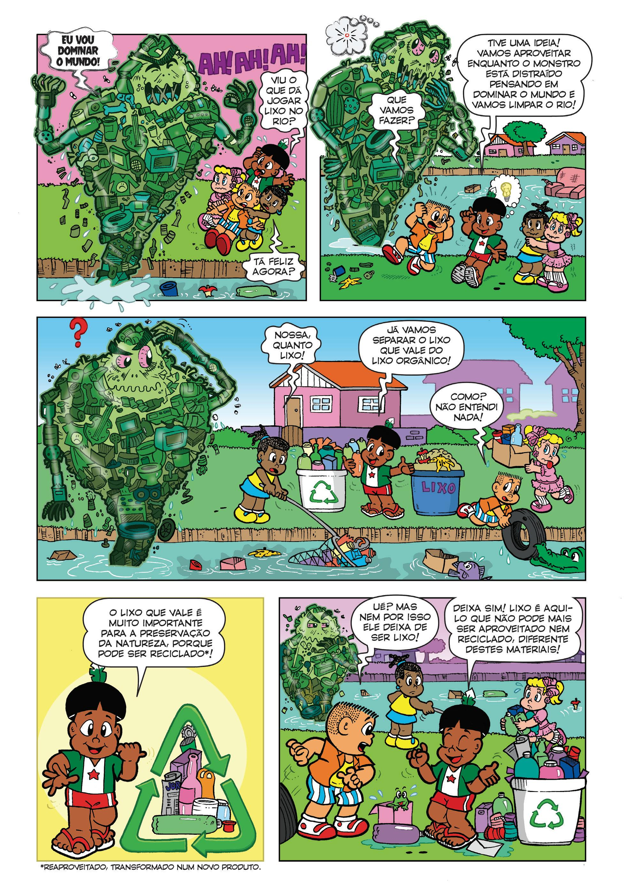

01
Descarte consciente
Aparelhos quebrados, carregadores, pilhas e baterias são separados do lixo comum e levados a ecopontos.
De celulares, pilhas e computadores sem uso até a recuperação de materiais valiosos, a reciclagem eletrônica evita a contaminação do solo e transforma resíduos em novos recursos.
Entender o destino correto dos equipamentos ajuda escolas, famílias e empresas a reduzirem impactos ambientais e fortalecerem a economia circular.

Veja o caminho que os equipamentos eletrônicos percorrem quando são descartados da maneira correta.

Aparelhos quebrados, carregadores, pilhas e baterias são separados do lixo comum e levados a ecopontos.

Técnicos classificam o que pode ser consertado e separam placas, plásticos, vidros e metais com segurança.

Materiais recuperados voltam como matéria-prima para novas fábricas ou viram projetos de robótica escolar.
Registros visuais sobre coleta seletiva, componentes internos e projetos de reutilização.
Fatos importantes sobre o impacto e o valor escondido nos eletrônicos.
Uma tonelada de celulares antigos pode conter muito mais ouro do que uma tonelada de minério bruto extraído da natureza.
Descubra o quanto você sabe sobre descarte correto e reciclagem tecnológica.
Atitudes simples no dia a dia que fazem diferença para o meio ambiente.
Antes de entregar celulares ou notebooks, faça backup e restaure as configurações de fábrica.
Evite furar ou abrir baterias estufadas para não haver risco de vazamento químico ou incêndio.
Lojas de eletrônicos, operadoras e pontos de coleta da prefeitura recebem resíduos gratuitamente.
Entenda os riscos da poluição eletrônica por metais pesados e como a reciclagem transforma esse cenário.
Acompanhe de forma divertida por que não devemos jogar aparelhos velhos no lixo comum.

Quer sugerir um ponto de coleta ou tirar dúvidas sobre o projeto? Envie uma mensagem.